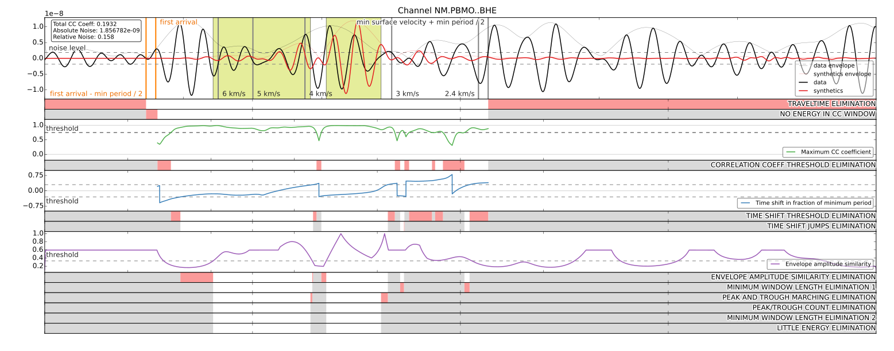

FAQ¶
This section intends to collect frequently asked questions and will hopefully grow over time.
How do I control and tune the window selection algorithm?¶
For this you have to edit the FUNCTIONS/window_picking_function.py file
within your project folder as described in
Customizing LASIF. The inner workings and the meaning of
the various parameters are explained in the LASIF paper. If something is
unclear, please let me know.
You will most likely have to tune these parameters - the defaults are pretty
conservative. The best way to tune them in my opinion is to add the
plot=True argument to the window picking function in
FUNCTIONS/window_picking_function.py, e.g.
...
windows = select_windows(
...,
plot=True,
...)
...
This will pop up a window similar to the one in the paper for each selected window.
No windows due to signal to noise ratio:

Some picked windows:
{kind=link}
This enables you to judge the effect of each parameter and should allow you to fine tune the algorithm to the data at hand. Simply test for a couple of windows with
$ lasif select_windows ITERATION EVENT_NAME
and tune the parameters until you are satisfied. Don’t forget to remove
the plot=True statement after the tuning!